Parę miesięcy temu postanowiłem powrócić do mojego hobby z czasów dzieciństwa: elektroniki. Powrót, po ponad dziesięciu latach przerwy, okazał się być trudniejszy niż przypuszczałem, a droga do pierwszego działającego układu pełna frustracji i porażek.
Pomimo tego radość z wykonania najprostszego generatora, który naprzemiennie migał diodami LED dostarczyła mi tak dużo radości i frajdy, że przez kilka następnych wieczorów oddałem się w całości budowie kolejnych układów.
Niestety elektronika jako hobby, nie jest już w Polsce tak popularna jak miało to miejsce w końcówce lat dziewięćdziesiątych. A szkoda, bo na zachodzie mamy obecnie do czynienia z prawdziwym boomem na elektronikę. Dobrze ilustrują to platformy takie jak Arduino czy Raspberry PI. Nie wspominając już o modzie na retro-computing (a więc na budowę prostych, często 8-bitowych komputerów wprost z układów scalonych) uosabianej przez takie postaci jak Ben Eater i projekty jak The MOnSter 6502 i Gigatron
Niestety nauka nowej umiejętności czy jest nią jazda samochodem, czy język obcy czy też elektronika, nie jest prosta. Na początkujących czyha wiele pułapek, które zniechęcają ich do dalszej nauki. Dlatego, aby ułatwić początkującym wejście w świat elektronik, postawiłem podzielić się moimi doświadczeniami (czytaj wpadkami) i opisać problemy na jakie się natknąłem. To jest pierwszy wpis z tej serii, w którym opisuję pułapki które czekają nas przy zakupie pierwszych płytek stykowych, przewodów i elementów elektronicznych. Zapraszam!
Płytka stykowa
Według mnie najlepszym sposobem montażu układów, na początku przygody z elektroniką są płytki stykowe. Na rysunku poniżej przedstawiam przykład dwóch takich płytek: 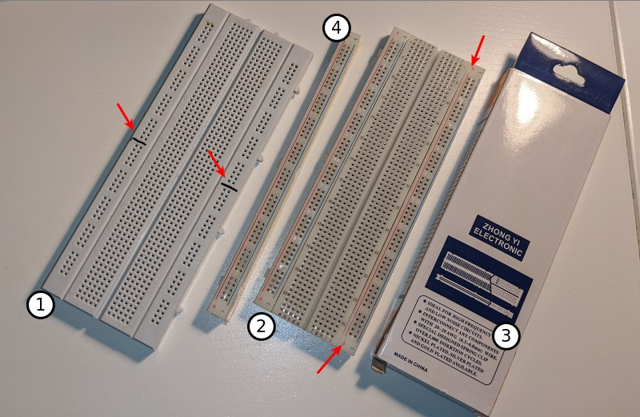
Płytka oznaczona numerem 1, to przykład płytki droższej która mimo to posiada kilka poważnych mankamentów. Po pierwsze brakuje oznaczenia polaryzacji szyn zasilania, co rodzi pole do przykrych w konsekwencjach pomyłek (np. nieprawidłowe doprowadzenie zasilania do układu scalonego). Po drugie szyny zasilania są “przecięte” w połowie płytki (patrz strzałki). Tego typu “przecięcie” przydaje się gdy budujemy układy w których występują dwa poziomy zasilania np. 3.3V i 5V. Większość początkujących elektroników korzysta jednak z pojedynczego napięcia zasilania. W praktyce okazywało się to tak denerwujące że musiałem dodać specjalne oznaczenia markerem, żeby już więcej się nie zastanawiać dlaczego połowa układu nie ma napięcia zasilania.
Płytka oznaczona numerem 2 to tania płytka (7 PLN za sztukę), produkcji chińskiej. Mimo to producent nie oszczędzał na pomocnych oznaczeniach. Każda z czterech linii zasilania ma swój kolor, każde gniazdo jest adresowane za pomocą kombinacji litery (a-j) i liczby (1-65). Może, na pierwszy rzut oka nie wydaje się to przydatne, ale w internecie można znaleźć mnóstwo projektów pomyślanych specjalnie do wykonania na płytkach stykowych, które zawierają instrukcje typu: “umieść rezystor 1k w gniazdach 5f i 5c”.
Niestety niska cena płytki nr. 2 znalazła negatywne odbicie w jakości styków. Korzystanie z tej płytki rodziło sporo kłopotów: często miałem problemy żeby włożyć końcówkę przewodu lub nóżkę elementu do danego gniazda. Czasami pomagało wetknięcie szpilki, czasami włożenie przewodów najpierw do sąsiadujących gniazd a dopiero potem przeniesienie ich do tego właściwego. Czasami pomagało “wiercenie” w gnieździe nóżką diody LED. Innymi słowy, spora część radości wynikającej z budowania układu ustępowała miejsca frustracji związanej z niskiej jakości płytką.
Przed zakupem płytek polecam przeczytać recenzje, zarówno na polski forach jak i na zagranicznych (oraz na Amazonie). Osobiście, nie znalazłem jak do tej pory płytki stykowej godnej polecenia, jeżeli taką znacie to proszę dodajcie komentarz z linkiem.
Wróćmy jeszcze na chwilę do zdjęcia płytek. Część oznaczona numerem cztery to pojedyncza szyna zasilania, odseparowana od płytki stykowej typu dwa. Jak się okazuje od każdej płytki możemy oderwać jedną lub obie szyny zasilania. Przy wykonywaniu tej operacji przydaje się nożyk do kartonu, który pozwoli nam rozciąć izolacyjny materiał znajdujący się na spodzie płytki.
Każda płytka stykowa posiada wypustki, które pozwalają zbudować “megapłytkę” z dwóch lub większej liczby pojedynczych płytek (z obecnymi lub oderwanymi szynami zasilania). Niestety płytki wyprodukowane przez różne firmy rzadko są ze sobą kompatybilne. Poniżej zamiejszczam zdjęcie takiej “megapłytki”: 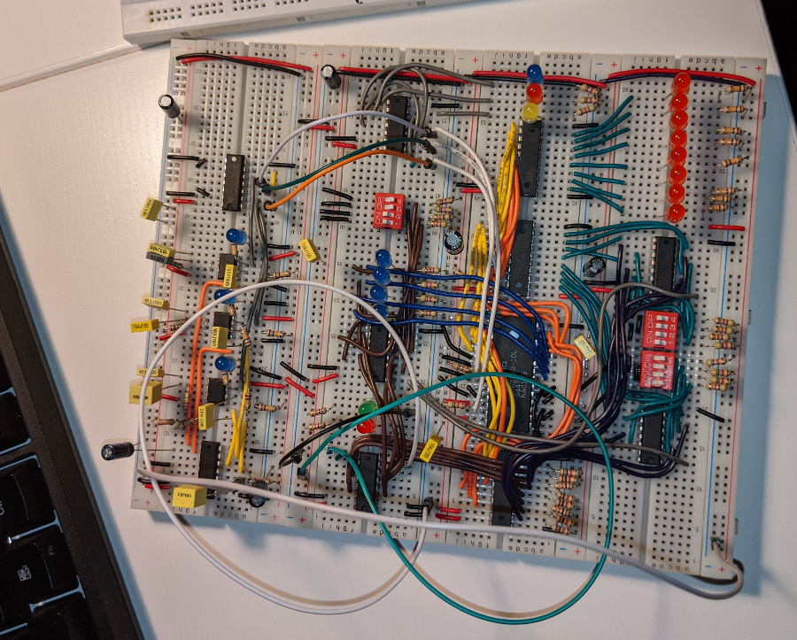
Oprócz pełonowymiarowych płytek, na ryku dostępne są też mniejsze modele: 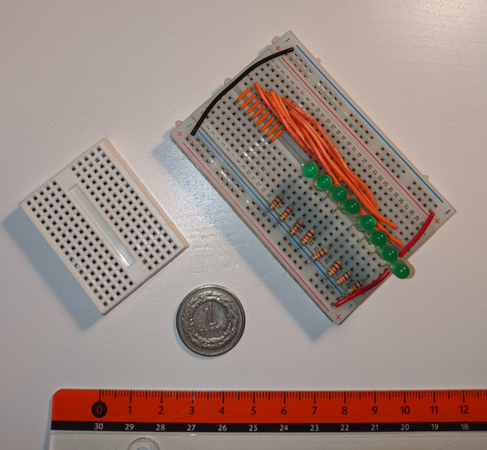 Osobiście nie polecam ich początkującym, gdyż są po prostu za małe.
Wydawało by się że orientacja płytki nie ma żadnego znaczenia. Warto jednak przy budowie układów podążać za sprawdzoną regułą, która mówi że prądy powinny płynąć z góry na dół, a sygnały od lewej do prawej. W praktyce oznacza to że górna wewnętrzna szyna zasilająca powinna być podłączona do plusa zasilania, a dolna wewnętrzna do minusa. Przestrzeganie tej zasady znacznie ułatwi nam doprowadzanie zasilania do układów scalonych.
A skoro już jesteśmy przy układach scalonych, większość z nich nie posiada prostopadłych nóżek. Zamiast tego nóżki rozchodzą się nieco na boki, co uniemożliwia umieszczenie takiego układu w płytce stykowej. Rozwiązaniem tego problemu jest przygięcie nóżek scalaka przed włożeniem go do płytki: 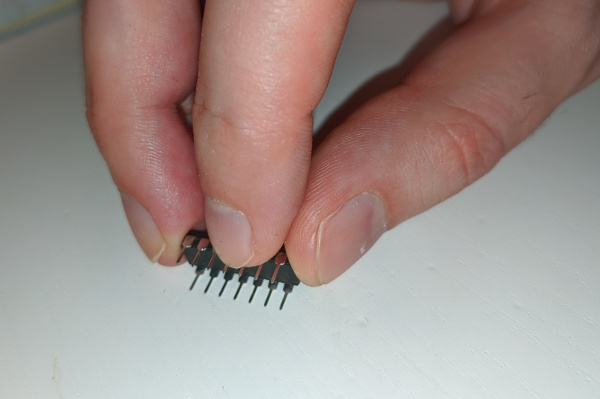
Zanim opuścimy temat płytek warto jeszcze dodać, że na opakowaniu płytki znajduje się jeden z najważniejszych jej parametrów, mianowicie zakres grubości drutów/końcówek/wyprowadzeń z jakimi płytka współpracuje. Ten parametr okaże się istotny gdy będziemy planować zakup przewodów kompatybilnych z płytką (czytaj nie każdy przewód pasuje do danej płytki).
Przewody / połączenia / zworki
Oprócz płytki stykowej, przy budowie układów będziemy też potrzebowali całej masy przewodów. Osobiście polecam zakup zestawu przewodów takich jak Adafruit Hook-up Wire, wraz ze szczypcami do ściągania izolacji takimi jak Adafruit Wire Stripper: 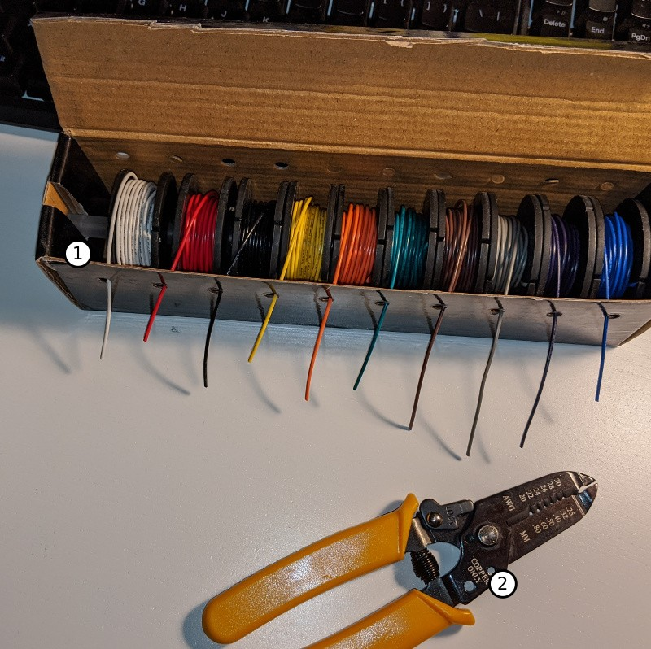 Przy zakupie warto zwracać uwagę czy na pewno kupujemy jednożyłowy, cynowany przewód miedziany, a nie na przykład wielożyłowy (czysta miedź pokrywa się nieprzewodzącą warstwą tlenków, cynowany drut zapewni nam znacznie lepszą jakość połączeń).
Przedstawiony powyżej zestaw przewodów ma grubość drutu AWG 22 (miara amerykańska), co przelicza się na polskie 0.6438 milimetra średnicy. Płytki stykowe z pierwszej sekcji, pracują poprawnie z przewodami o grubościach 0.3-0.8 milimetra, a więc są kompatybilne z tym zestawem przewodów.
Ze względu na rosnące ceny miedzi zakup zestawów takich jak te przedstawione powyżej, może wiązać się ze sporym wydatkiem. Należy jednak pamiętać że jeden zestaw przewodów powinien zaspokoić nasze potrzeby na mniej więcej rok, a szczypce to wydatek jednorazowy. Obecna cena powyższego zestawu przewodów w sklepie Mouser wynosi około 120PLN. Oczywiście zawsze warto sprawdzić czy nie znajdziemy lepszej oferty w polskich sklepach, na ceneo czy w końcu na AliExpressie.
Oprócz zestawu przewodów, w sklepach można znaleźć również zestawy zworek (numer jeden na zdjęciu): 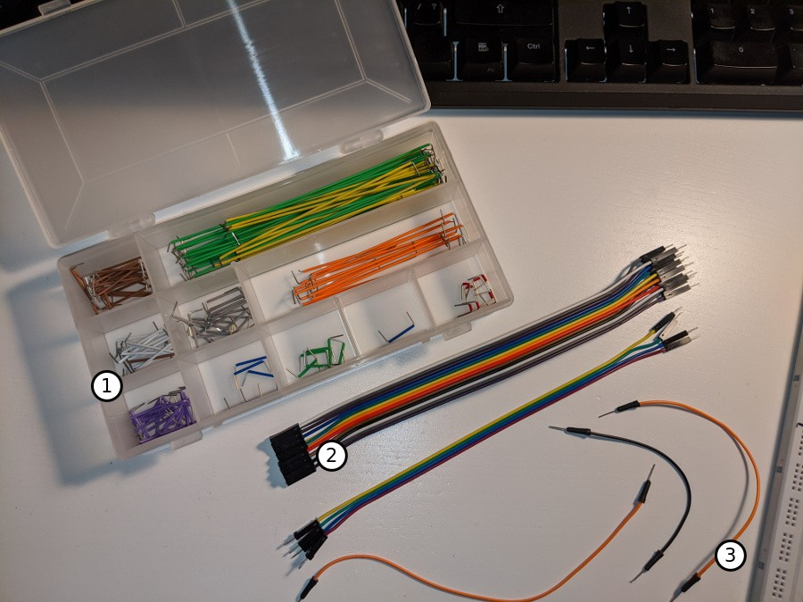 Zestawy takie są, w stosunku do ich ceny, kompletnie bezużyteczne. Zwory prawie nigdy nie miały potrzebnej długości gdy chciałem ich użyć. Krótkie zworki kończyły się bardzo szybko, podczas gdy długich zostawał nadmiar. Jednym słowem: nie polecam.
Polecam za to zakup elastycznych przewodów połączeniowych (numer dwa i trzy na zdjęciu). Przewody typu trzy dostępne są w zestawach o dość przystępnej cenie. Przewody typu dwa występują we wstęgach, które można rozrywać (nawet na pojedyncze przewody) wedle upodobań.
Do zabawy z płytkami stykowymi i Arduino potrzebne nam będą przede wszystkim przewody z wtykami męskimi (patrz numer trzy). Do zabawy z Rasbperry PI, a także z modułami do Arduino (np. czujniki ruchu) przydadzą się przewody męsko-żeńskie (patrz numer dwa).
Czasami zdarza się, że przewody będące częścią zestawów mają końcówki wtyków pokryte ochronną warstwą plastiku którą łatwo przeoczyć. Jeżeli przewód “źle łączy” należy sprawdzić czy końcówki nie posiadają takiej ochronnej izolacji i ewentualnie ją usunąć.
Warto zarezerwować sobie dwa kolory (np. czarny i czerwony) na oznaczenie przewodów które mają potencjał masy i plusa zasilania. Warto też pomyśleć o konwencji użycia kolorów, na przykład: przewód biały to zawsze sygnał zegara. Poza tym im więcej kolorów mamy do dyspozycji tym lepiej.
Pozostałe narzędzia
Pozostałe przydatne narzędzia to:
- Mały płaski śrubokręt
- Szczypce tnące boczne do ucinania zbyt długich wyprowadzeń elementów (model ze zdjęcia)
- Oraz najbardziej przydatna z całej tej trójki, bo pozwalająca wygodnie wyjmować i wkładać przewody połączeniowe - pęseta (model ze zdjęcia)
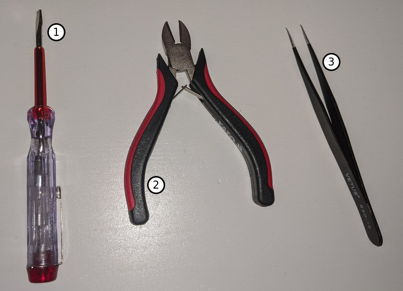
Przycinanie wyprowadzeń elementów za pomocą szczypiec może być odrobinę niebezpieczne. Nóżki, na przykład dużych diod LED, podczas przycinania mają tendencje to “wystrzeliwania” w znanym tylko sobie kierunku, dlatego warto też pomyśleć o zakupie okularów ochronnych.
Ostatnim, naprawdę niezbędnym narzędziem, w jaki powinniśmy się zaopatrzyć jest multimetr. Ja używam następującego modelu, mało znanej chińskiej marki i jestem z niego całkowicie zadowolony: 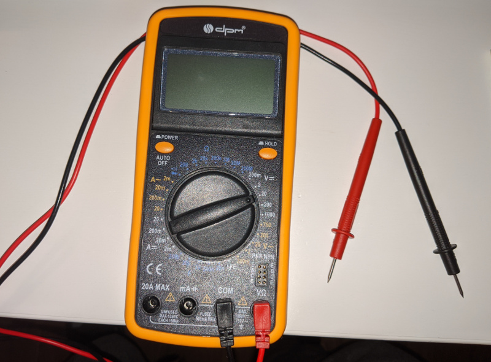
Elementy elektroniczne
Można by pomyśleć, że po całym tym zamieszaniu z płytkami, narzędziami i multimetrem zakup elementów elektronicznych będzie czystą przyjemnością. Nic bardziej mylnego! Pierwszym zaskoczeniem jakie mnie spotkało, była niewielka średnica wyprowadzeń resystorów zakupionych w zestawie “dla początkujących”. Średnica była tak mała, że czasami trudno było uzyskać dobre połączenie z płytką stykową. Ostatecznie skończyłem z tym zestawem rezystorów
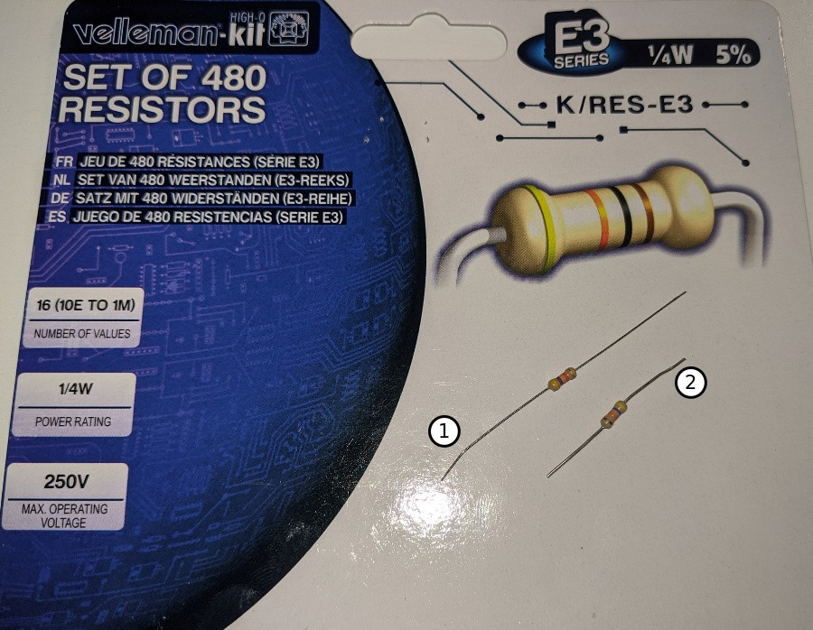
Dobrze ilustruje to powyższe zdjęcie, rezystor oznaczony numerem jeden pochodzi z taniego zestawu “dla początkujących”. Posiada długie i cienkie wyprowadzenia słabo współpracujące z płytkami stykowymi. Rezystor oznaczony numerem dwa pochodzi z zestawu velleman’a - wyraźnie widać krótsze, ale za to grubsze i bardziej masywne wyprowadzenia.
Osobiście odradzam również zakup rezystorów o mocy większej niż 0,25W. Rezystory 1W w porównaniu do 0,25W to prawdziwe olbrzymy.
W przeciwieństwie do rezystorów, zakup diod LED (polecam “duże” 5mm) czy kondensatorów nie sprawiał większych problemów, elementy po prostu działały.
Z kolei zakup przycisków (“switchy”) i potencjometrów sprawił mi trochę kłopotów. Okazuje się że wiele elementów występuje w dwóch wersjach: do wlutowania i do płytek stykowych. Popatrzmy na zdjęcie: 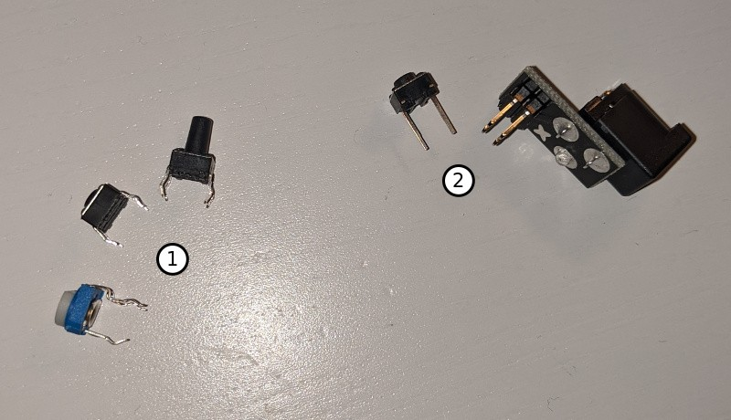 Elementy z grupy pierwszej są przeznaczone do wlutowania. Elementy z grupy drugiej, charakteryzującej się prostymi wyprowadzeniami, są przewidziane do umieszczenia na płytkach stykowych. Zawsze należy dokładnie sprawdzić czy na pewno kupujemy takie elementy, jakich naprawdę potrzebujemy.
Na koniec, żeby nie tracić czasu na mozolne odnajdywanie potrzebnych elementów, warto zaopatrzyć się w dobry organizer: 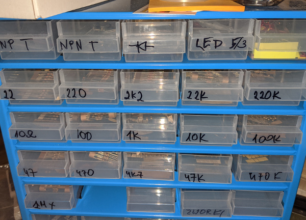
Zasilanie
Początkowo zasilałem moje układy z baterii 9V. Wykorzystywałem do tego celu kijankę (numer jeden), gniazdo które można włożyć w szynę zasilania płytki stykowej (numer trzy) oraz konwerter (numer dwa): 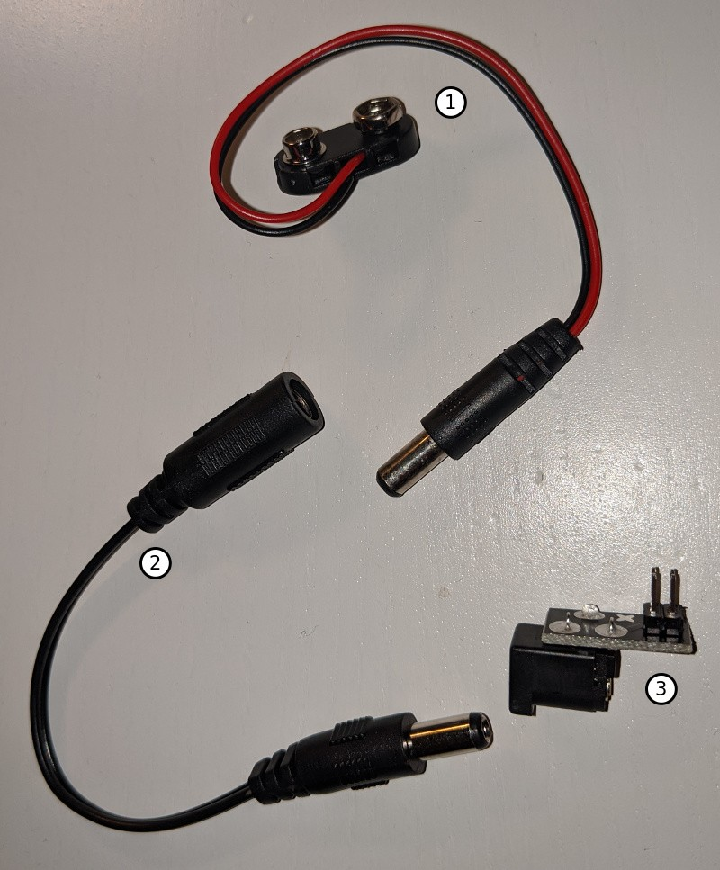 Konwerter okazał się konieczny, ponieważ zakupu gniazda dokonałem “na oko”, nie będąc świadom że istnieje wiele różnych rozmiarów wtyków zasilania.
Osobiście nie polecam tego sposobu zasilania. Po pierwsze jesteśmy zdani na napięcie baterii, a wiele układów wymaga niestandardowych napięć 3,3V lub 5V. Po drugie zaśmiecamy środowisko zużytymi bateriami, przy jednoczesnym zubożaniu naszego portfela.
Najlepszym rozwiązaniem, dla osób dysponujących zapasem gotówki jest kupno zasilacza laboratoryjnego, nazywanego również zasilaczem warsztatowym. Dla wszystkich pozostałych, przynajmniej na początku, dobrym kompromisem jest zakup zasilacza płytek stykowych: 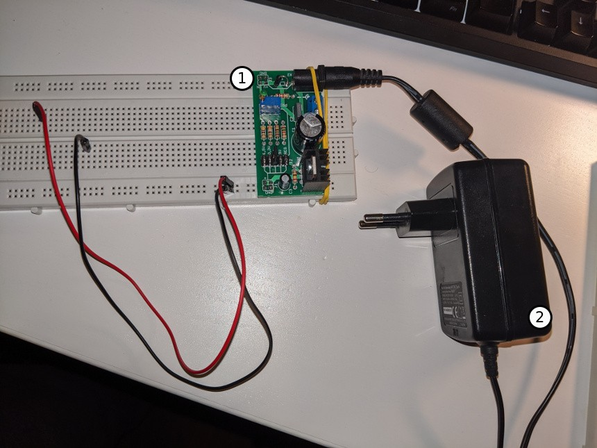 Należy pamiętać że sam zasilacz to tylko prosta płytka PCB (ang. printed circuit board, pl. płytka drukowana), do pracy potrzebny jej jest zasilacz impulsowy - oznaczony na zdjęciu numerem dwa.
Przedstawiony powyżej zasilacz, który służy mi już kilka miesięcy, niestety nie jest pozbawiony wad. Najpoważniejsza z nich jest taka, że nie jesteśmy ostrzegani o zwarciu przewodów zasilania. Istnieją na rynku zasilacze które np. piszczą gdy dojdzie do zwarcia. W powyższym zasilaczu, zwarcie można rozpoznać jedynie po silnie rozgrzanym radiatorze. Dlatego, pomimo że podałem linki do sklepu, zachęcam was do poszukania lepszego modelu lub jeżeli już taki posiadacie do pozostawienia komentarza z linkiem.
Sklepy
Na koniec lista sklepów z których jestem względnie zadowolony:
Z zagranicznych warto wspomnieć:
- Mouser - ten sklep śmiało można nazwać profesjonalnym. Można łatwo i szybko (czas dostawy nie przekracza tygodnia) dostać układy praktycznie niedostępne na polskim rynku. Ale uwaga, ceny produktów podane są na modłę amerykańską, a więc nie zawierają 23% podatku VAT. Najeży o tym pamiętać porównując oferty.
Oczywiście zawsze warto korzystać z porównywarek cen i sprawdzać opinie sklepów na forach internetowych. Bardziej odważni i cierpliwi mogą spróbować szczęścia na AliExpressie.
Na zakończenie, “starożytne” i niestety niedziałające, układy scalone polskiej produkcji (sic!), które otrzymałem od jednego z polskich sklepów: 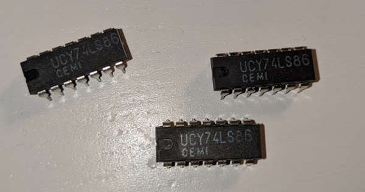